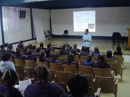

programacion
en programacion hemos aprendido un poco de muchas cosas
aunque son dificiles le podemos entender a veces nos estresamos mucho pero
es algo que tenemos que hacer no esta dificil si pones atencion o no estas jugando
en estos tres años nos han tocado profes que son chidos si son regañones
pero es algo que hacen por nuestro bien y aprender cada paso,esfuerzo es parte de eso